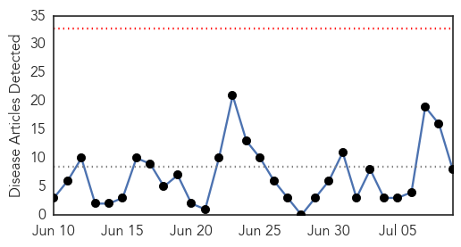

Dengue Fever
30-Day Web Trend
7 alerts, 4 warnings

30-Day Twitter Trend
3 alerts, 0 warnings

Article Locations

Article Confidences

Top Articles:
- 0.999
- MERS listed as notifiable disease
- 0.988
- Fiji: Dozens of chickenpox cases prompt health alert
- 0.987
- KBS World Radio
- 0.985
- Software launched to help doctors diagnose, treat dengue : India, News
- 0.964
- Dingell urges medical aid to fight Yemen’s dengue fever
- 0.964
- Govt says no dengue deaths, private hospitals in Bengaluru reject claim
- 0.909
- Hong Kong confirms second encephalitis case in a week
- 0.887
- Authorities reiterate cleaning of mosquito breeding sites
- 0.855
- Ignorance blamed for fever misdiagnoses
- 0.789
- Selangor records over 30,000 dengue cases, 84 deaths
- 0.739
- Dengue campaign to educate the public
- 0.690
- Humanitarian crisis in Yemen worries local Yemenis
- 0.656
- Vulnerable areas: Qaim directs KWSB to start chlorination of water
- 0.628
- For clean water: CM directs water board to expand scope of chlorination
- 0.608
- Qaim directs KWSB for necessary steps to start chlorination of water
- 0.607
- Solve garbage problem within a month, Selangor authorities told - Nation
Top Tweets:
-
No tweets found for Jul 09, 2015
Cholera
30-Day Web Trend
0 alerts, 0 warnings

30-Day Twitter Trend
0 alerts, 0 warnings

Article Locations

Article Confidences

Top Articles:
- 0.996
- ICDDR, B study finds cholera vaccine ‘effective’
- 0.990
- Use these affordable technologies to steer away from cholera - Kachwanya.com
- 0.926
- Florida’s Supposed ‘Flesh-Eating’ Bacteria Claims Seven Lives
- 0.920
- Technology researcher discusses tracking disease outbreaks via social media
- 0.882
- News Scan for Jul 09, 2015
- 0.858
- World: Cholera vaccine works in real-life trial: study
- 0.597
- Tanzania: Services in Nyarugusu refugee camp ‘stretched beyond their limits’ - United Republic of Tanzania
- 0.551
- Patient consent in the UK
Top Tweets:
- 0.792
- RT: Remember the uproar over the ebola-exposed nurse returning to U.S.? Haitians deserve cholera justice .http://t.co/QHXAffTuZB
- 0.589
- Cholera vaccine can serve as a bridge while WSH is addressed - it's an impt tool in the toolkit against cholera https://t.co/SR3UO4xSA8